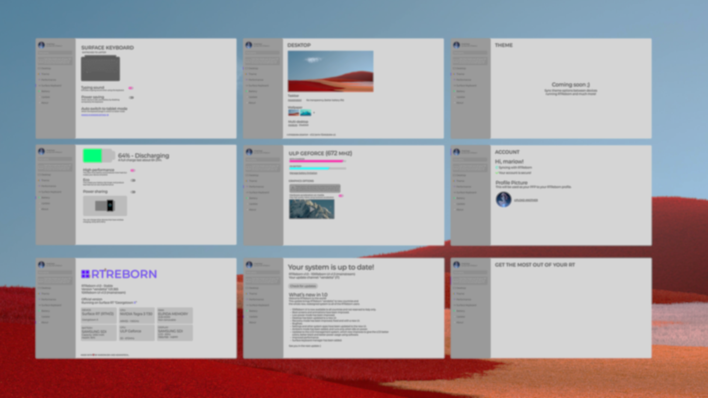
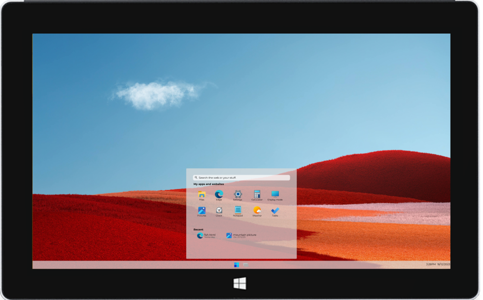
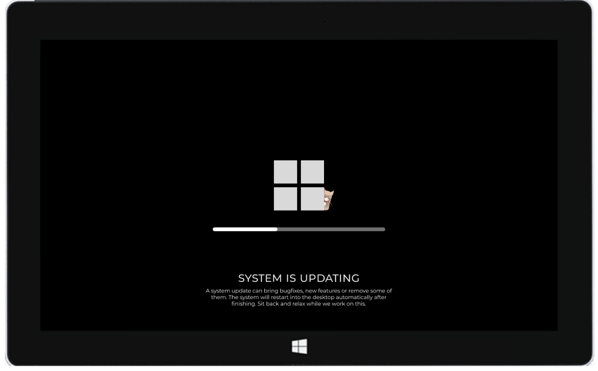

Your new, reborn RT.

A new life for an abandoned device.
Have a Surface RT laying around and don't know what to do with
it? Get RTReborn on it and watch how that little tablet becomes
usable again.
With a clean and sleek design, that resembles the Windows 10x
design, light to run, RTReborn is the only OS that you need.
Supported by the community
All applications that are on RTReborn are community made and open
source.
You can build your own app and share it to the community, and get on
the appstore.
Constantly updating, constantly improving
Evolving everyday, constantly maintained. With silly characters
around the os :3
Ready to spice up your RT?
Get it now!
RTReborn
The only OS that you’ll need.
Made with <3 by mariow.dev and adamistech_
Tasks
by LH_FAN
Gallery
by mariow.dev
Ambient
by F1L0

Soon 👀/div>
For RT and RT 2
Requires Windows RT 8.1 or 10
For 8.1, open in Metro edge app.
For generic RT Tablets
(ASUS, Lenovo, Dell, Samsung)